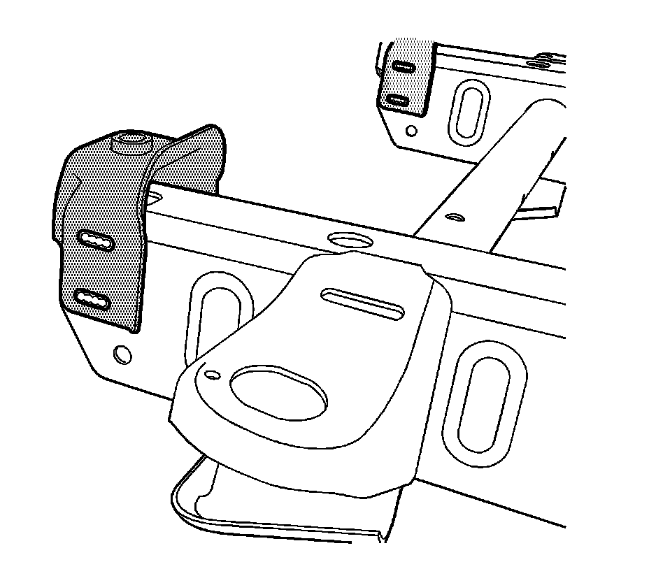
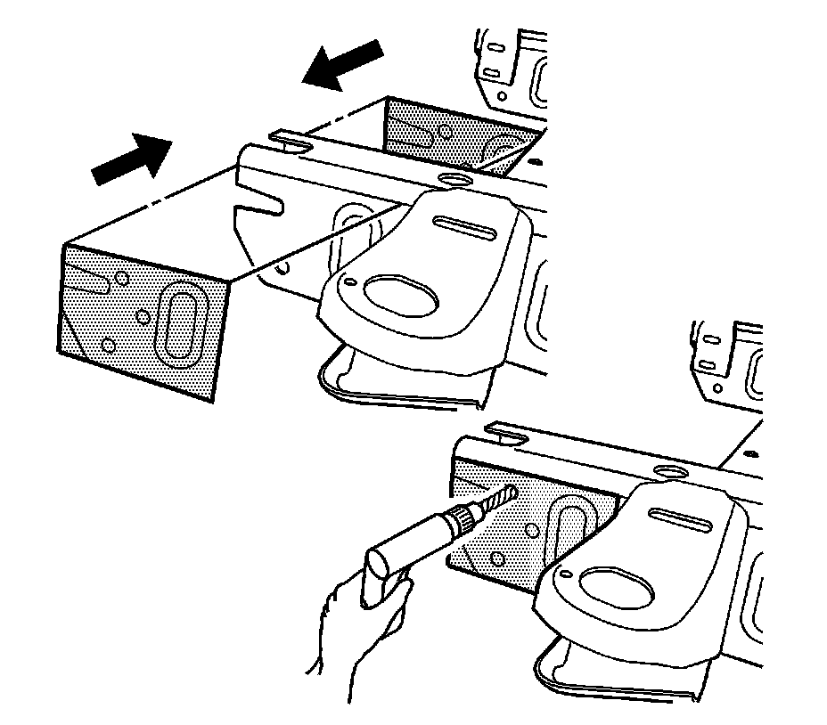
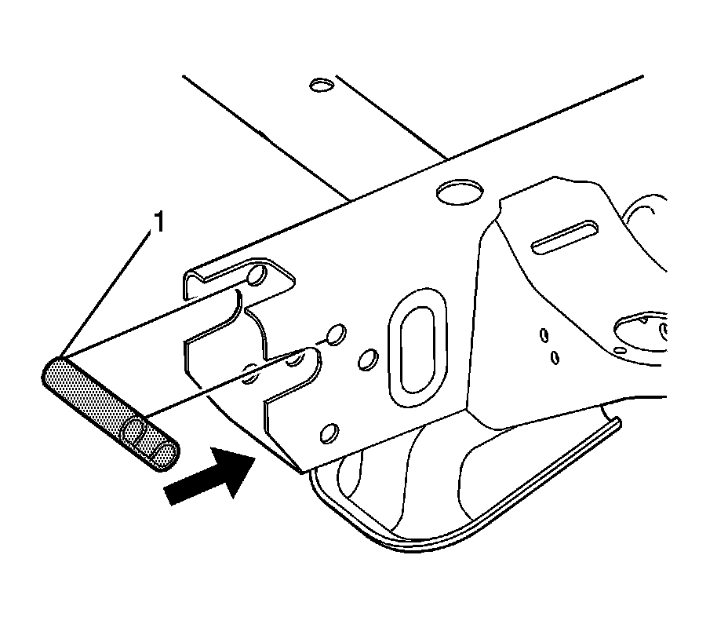
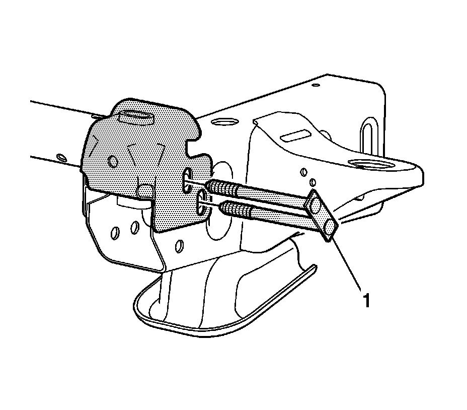

Front Bumper Bracket: Service and Repair
Front Bumper Impact Bar Bracket Replacement (Light Duty)
Removal Procedure

1.Remove all related panels and components.
Important:Do not remove any material from the frame rail when removing the bumper bracket.
2.Remove the damaged bumper bracket.
Installation Procedure

Important:Drill 2 holes on each side of the rail.
1.Position the template as shown. Drill two 15 mm (9/16 in) holes on each side of the frame rail at the locations indicated on the template.
2.Apply approved anti-corrosion primer to the bare metal surfaces.

1.Insert the sleeve (1) into the rail end as shown. Align the sleeve with the holes drilled in the previous step.

Important:The bolt plate must be inserted from the outboard side of the rail toward the inboard side.
1.Install the replacement bumper bracket with the supplied bolt plate (1).
2.Hand tighten the fasteners.
3.Install all related panels and components.
4.Align the front bumper assembly.
Notice:Refer to Fastener Notice .
5.Tighten the bolts.
TightenTighten the bolts to 160 N �m (118 lb ft).